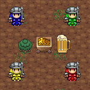

Vindinium is a game that involves 4 bots, mines, and cream soda. The object of the game is to amass the largest amount of gold from the mines. The bots are created by the players using Javascript. The players can program their bots to do a variety of actions like attack or go after enemy owned mines. Each game lasts 1200 turns. Each action like: moving, attacking, claiming a mine, elapses one turn. Once 1200 turns are elasped, the bot with the most gold is declared the winner. A bot claims mines by attacking the goblin that guards the mine. After defeating the goblin, the mine is claimed and gold will start to generate. The more mines you have, the more money you get. Each bot has 100 health, there are few things that can lower bot health. Actions like: Attacking another bot, walking around the map, and claiming a mine. Keep in mind that a bot cannot die by walking around, but it's health will stay at one until it recovers at a tavern. Taverns are the source of healing for all bots. The tavern itself looks like a large cream soda. In order to drink up and heal, a bot must pay 2 coins. After drinking, a bot's health is fully restored and it's ready to jump back into the fray. When a bot is killed by another bot, they lose all their mines. And the person who killed them gets the mines. For example, lets say the blue bot has 3 mines. And the red bot has 1. The blue bot was low on health, so it tries to travel to the tavern. But then, the Red bot passes by and attacks the blue bot. The blue bot dies and all the mines change from blue gold to red gold. After death, a bot will respawn in the place it appeared when the game began.
I used a template made by Mr. Hesby. I added a few commands like double drink. That allows my bot to drink twice from a tavern. Players construct their bots using javascript variables and commands. I also made a command that allows my bot to target any mine that isn't owned by me, which allows my bot to treat enemy mines and unclaimed mines as the same thing. The bot is mindless without commands, if nothing is coded then the bot will move in random directions or go random/going random. The bot can attack when it comes in contact with an enemy bot.
